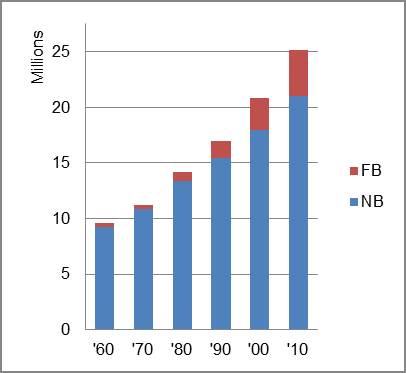

The foreign-born (FB) population increased from 298,791 in 1960 to 4,142,031 in 2010. That was an increase of 1286.3 percent. The foreign-born share increased from 3.1 percent in 1960 to 16.5 percent in 2010.
The share of the overall population that was native-born (NB) increased by 126.3 percent.
Texas: Population 1960-2010 
The first chart below shows the three population change factors for three periods adjusted for annual average amounts. The largest factor in all periods was B-D, acconting for more than half of population increase.
The second chart shows the same data but with an adjustment to reflect births to immigrants shifted to NIM. In it, NIM became the largest factor in population increase in the the two most recent periods.
Texas: Sources of Population Change 1990-2013 Texas: Sources of Population Change (Adjusted) 1990-2013
B-D NDM NIM B-D NDM NIM 90-'99 58.0% 18.6% 23.4% 90-'99 41.0% 18.6% 40.4% 00-'09 54.4% 21.7% 23.9% 00-'09 33.7% 21.7% 44.5% 10-'13 52.9% 31.2% 16.0% 10-'13 29.7% 31.2% 39.2%